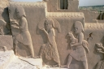

|  |
Peter Cameron's coauthors |
Publications
Here is a list of people with whom I have written or edited a book or paper.
Nine of them are included in the pseudonym "W. E. Opencomb" under which
the paper "On the intricacy of combinatorial construction problems"
Discrete Math. 50 (1984), 71-97, was written; for six of the
nine, this is my only joint work with them.
My present or former students are starred. The number of joint papers is in
parentheses.
The list includes those for which the work has been published or accepted
for publication. The total reached 250 on 19 July 2024.
A full list of my publications is here, while a
list of joint papers by coauthor is here, and a list
of coauthors by date of our first joint paper is
here. (There is a slight glitch here, in that the
gap between acceptance and publication can vary between essentially zero and
several years.)
- G. Aalipour (1)
- B. Adam-Day (1)
- M. V. Ajith (1)
- S. Akbari (1)
- P. P. Alejandro
= P. A. Kazanidis (2)
- M. Aljohani* (1)
- M. Anagnostopoulou-Merkouri (2)
- J. André (1)
- R. Applegate* (1)
- J. Araújo (18)
- J. P. Araújo (3)
- G. Arun Kumar (2)
- L. Babai (4)
- R. A. Bailey (22)
- R. F. Bailey* (2)
- J. Bamberg (1)
- E. E. Bannai (1)
- L. W. Beineke (1)
- J. P. Bell (1)
- E. A. Bender (2)
- W. Bentz (7)
- A. Beutelspacher (1)
- P. Bhowal (2)
- S. Biswas (1)
- C. Bleak (2)
- A. Blokhuis (1)
- B. Bodor (1)
- A. Bohn (2)
- A. Bonato (2)
- J. N. Bray (1)
- T. Britz* (1)
- A. E. Brouwer (1)
- J. M. Browning (1)
- C. Buchheim (1)
- C. Budd (1)
- F. Buekenhout (1)
- F. C. Bussemaker (1)
- Q. Cai (1)
- A. R. Calderbank (1)
- N. J. Calkin (1)
- J. J. Cannon (1)
- Ph. Cara (1)
- C. Casolo (2)
- A. Castillo-Ramirez (1)
- T. Tamizh Chelvam (5)
- A. G. Chetwynd (2)
- J. Cilleruelo (1)
- S. Cioabă (1)
- A. M. Cohen (1)
- R. Connelly (1)
- S. Cooter (1)
- D. Craven (1)
- A. N. Dang (1)
- A. Das (2)
- D. E. Daykin (1)
- D. Delić (2)
- P. Delsarte (1)
- R. H. F. Denniston (1)
- A. W. Dent (1)
- H, K. Dey (2)
- M. Deza (6)
- P. Dobcsányi (2)
- T. Dobson (1)
- H. R. Dorbidi (1)
- D. A. Drake (1)
- J. East (1)
- S. Eberhard (1)
- D. Ellis (1)
- P. Erdős (2)
- B. Fairbairn (2)
- M. E. Fernandes (3)
- D. Ferreira (1)
- S. Ferreira (1)
- K. Filipiak (1)
- P. H. Fisher (1)
- D. FitzGerald (1)
- D. G. Fon-Der-Flaass (2)
- P. Frankl (3)
- S. D. Freedman (1)
- M. Gadouleau (6)
- T. Gateva-Ivanova (1)
- A. L. Gavrilyuk (1)
- D. Gewurz (1)
- D. Ghinelli (1)
- S. Ghosh (1)
- M. Giudici* (2)
- J.-M. Goethals (4)
- S. V. Goryainov (1)
- H. Guerra (1)
- W. H. Haemers (1)
- J. I. Hall (2)
- S. Harper (1)
- A. J. W. Hilton (2)
- A. Herman (1)
- J. W. P. Hirschfeld (1)
- W. A. Hodges (1)
- F. C. Holroyd (1)
- D. R. Hughes (2)
- A. Hulpke (1)
- N. Iyudu (1)
- B. Jackson (1)
- S. H. Jafari (1)
- F. E. Jannat (1)
- D. Johannsen (1)
- C. R. Johnson (1)
- K. W. Johnson (1)
- G. A. Jones (1)
- Š. Jurina (1)
- J. Kahn (1)
- M. Kang (1)
- W. M. Kantor (6)
- T. Kataoka (1)
- S. A. Kathirvel (1)
- T. Kavaskar (1)
- K. K. Kayibi (1)
- M. Kinyon (2)
- M. Kiyota (2)
- M. H. Klin (1)
- N. Knarr (1)
- J. Konieczny (1)
- G. Korchmàros (1)
- L. G. Kovács (1)
- C. Krattenthaler (2)
- C. Y. Ku* (1)
- A. Kumar (2)
- J. Kunert (1)
- J. Kusuma* (1)
- B. Kuzma (1)
- C. Laflamme (1)
- A. Lakshmanan S (1)
- E. W. H. Lee (1)
- D. Leemans (4)
- R. A. Liebler (1)
- J. H. van Lint (5)
- D. Lockett* (1)
- P. Lopes (1)
- A. Lucchini (1)
- X. Ma (1)
- H. D. Macpherson* (1)
- H. R. Maimani (1)
- Y. Maissel (1)
- S. Majid (1)
- P. Manna (2)
- A. Markiewicz (1)
- C. Martins* (1)
- D. Marušič (1)
- N. Maslova (1)
- J. H. Mason (1)
- F. Matucci (2)
- F. Mazzocca (2)
- R. Mehatari (2)
- Y. Meissel (1)
- F. Merola (1)
- R. Meshulam (1)
- J. Mitchell (4)
- M. Mixer (2)
- A. Montanaro (1)
- J. P. Morgan (2)
- K. Morgan (1)
- Peter Müller (1)
- T. W. Müller (4)
- R. K. Nath (4)
- A. Navas (1)
- R. Nelson (1)
- J. Nešetřil (1)
- P. M. Neumann (3)
- M. Neunhöffer (1)
- M. F. Newman (1)
- M. W. Newman (1)
- R. Nikandish (1)
- T. Nilson (2)
- L. A. Nowitz (1)
- C. Nunes (1)
- A. M. Odlyzko (1)
- F. Olukoya (2)
- G. R. Omidi (2)
- P. P. Pálfy (1)
- A. Pasini (1)
- S. E. Payne (1)
- L. Pebody (1)
- Y. Peresse (1)
- V. Phan (1)
- M. Pouzet (1)
- C. E. Praeger (11)
- R. Ravindra Prathap (1)
- D. A. Preece (2)
- T. Prellberg (4)
- C. Quadrelli (1)
- T. Quinn-Gregson (1)
- J. Raminhos (1)
- W. Raynaud (1)
- L. B. Richmond (2)
- S. Riis (3)
- C. M. Roney-Dougal (2)
- C. A. Rowley (1)
- G. F. Royle (2)
- J. Rudd* (1)
- A. Rudvalis (1)
- B. Sambale (3)
- J. Saxl (4)
- A. Schaefer* (1)
- Cs. Schneider (1)
- P. Schweitzer (1)
- J. J. Seidel (7)
- G. M. Seitz (1)
- L. Selvaganesh (3)
- J. Semeraro (1)
- O. Serra (1)
- S. Severini (1)
- R. Sharafdini (1)
- F. Shaveisi (1)
- J. Sheehan (1)
- E. E. Shult (1)
- N. M. Singhi (2)
- L. H. Soicher (4)
- P. Solé (1)
- R. Solomon (1)
- D. Spiegelhalter (1)
- P. Spiga* (5)
- T. A. Springer (1)
- D. Stark (5)
- B. Steinberg (1)
- E. Suleiman (1)
- M. S. Sunitha (1)
- V. V. Swathi (1)
- Cs. Szabó (2)
- S. Tarzi* (3)
- B. Tayfeh-Rezaie (2)
- D. E. Taylor (1)
- D. N. Teague* (1)
- J. A. Thas (2)
- S. R. Thomas (1)
- S. Thomassé (1)
- H. C. A. van Tilborg (2)
- S. V. Tsaranov (2)
- A. Turull (1)
- E. R. Vaughan* (1)
- A. M. Vershik (1)
- I. M. Wanless (2)
- J. J. Watkins (1)
- B. S. Webb (2)
- A. L. Wells Jr.* (1)
- D. B. West (1)
- E. R. Williams (1)
- R. J. Wilson (1)
- A. Winter (1)
- D. R. Woodall (1)
- R. E. Woodrow (1)
- N. C. Wormald (1)
- T. Wu* (4)
- Y. Wu (1)
- H. Zhang (1)
The arXiv and other repositories
I am of the opinion that formal publication in a mathematics journal is no
longer the only output channel for mathematicians. Repositories such as the
arXiv should also be considered.
Here is a list of my co-authors with whom I have papers freely available on
the arXiv or other repositories. In some cases these have been submitted
for publication, and if they are published then the lists will then be modified
accordingly. The list below has links to at least one paper with each author.
- V. Arvind
- J. Belk
- S. Biswas
- P. Bonizzoni
- D. Bradley-Williams
- A. Cakiroglu
- G. Della Vedova
- C. del Valle
- C. A. Glass
- J. Hubička
- V. Joshi
- M. Kagan
- N. Khandekar
- M. Konečný
- A. Leporati
- G. Mauri
- K. Rekvényi
- R. U. Schumacher
- L. Stott
- V. Yildiz
My total number of coauthors including papers on the arXiv as well as published
papers reached 250 on 9 August 2022. (Marina Anagnostopoulou-Merkouri was
number 250.)
Erdős number
My Erdős number is 1. See the homepage of the
Erdős
Number Project for more information.
The rules for Erdős number require that the collaboration involves
writing a research publication; editing, writing expository articles, or
writing obituaries do not count. On this basis, I believe that all my
co-authors have collaborations with me that qualify except possibly for
L. W. Beineke,
C. Budd,
S. Cooter,
J. W. P. Hirschfeld,
D. Spiegelhalter,
D. B. West and
R. J. Wilson.
(The papers with
F. Buekenhout and
R. Connelly,
though mostly expository, do include new research.) The Erdős numbers
of four of these people (Beineke, Hirschfeld, West and Wilson)
are not affected; their "Cameron numbers" (computed
by the Erdős number rules) are 3, 2, 2 and 2 respectively (i.e. a
shortest path passes through Paul Erdős in each case).
Chris Budd has Erdős number 4 and David Spiegelhalter 3; both have
"Cameron number" 4. Stephen Cooter is not a mathematician.
Peter J. Cameron
19 July 2024